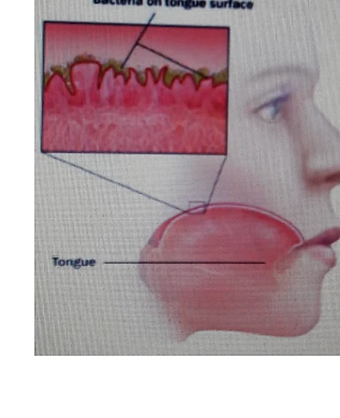

بخر الفم هو الرائحة غير الطبيعية الخارجة من الفم. لا يكون الفم النظيف في الحالة الطبيعية ذا رائحة مزعجة،
وإنما تنشأ الرائحة غالباً من تخمر الفضلات الغذائية المتبقية بين الأسنان وفي الحفر النخرة بفعل الجراثيم المختلفة.
المنشأ الشائعصحة فموية سيئة، بقايا طعام، نخور، وجيوب لثوية.
التدبيرتمييز الأسباب الفموية عن الأسباب العامة ثم المعالجة الموجهة.
أولاً
ما هو بخر الفم؟
B
تأتي الجراثيم إلى الفم بواسطة الغذاء والهواء، وسرعان ما تجد الوسط الملائم من غذاء وحرارة ورطوبة فتتكاثر سريعاً. وقد تنتج غازات وروائح مثل الإندول والسكاتول والبوتريسين فتُكسب الفم الرائحة النتنة، ويزيد ذلك مع الإهمال في تنظيف الفم.
كما أن جفاف الفم يزيد من الرائحة، لذلك يكون أصحاب التنفس الفموي أو من لديهم نقص في اللعاب أكثر عرضة لبخر الفم.
نهج البخر
يُعد بخر الفم عرضاً وليس مرضاً قائماً بذاته. وعلى طبيب الأسنان أن يميز بين الأسباب الموضعية الفموية والأسباب العامة المسؤولة عن الحالة.
تختلف رائحة الفم تبعاً لأوقات النهار وكمية اللعاب المتدفق.
تكون أشد في الصباح بسبب تناقص اللعاب أثناء النوم وتفسخ البقايا.
تشتد أيضاً عند المصابين بآفات رئوية وعند من لديهم حليمات لسانية كثيفة مغطية للسان.

الصورة المقتطعة من المصدرتبيّن تراكم الجراثيم على اللسان باعتباره أحد المصادر المهمة للرائحة الفموية.
ملاحظة مهمة
الروائح الناجمة عن أسباب عامة خارج الفم لا تكفي فيها إزالة البقايا أو تحسين الصحة الفموية فقط، بل تحتاج إلى تقييم سببي ومعالجة من الطبيب المختص.
ثانياً
تصنيف الأسباب المؤدية لبخر الفم
C
الأسباب العامة
أمراض الممرات التنفسية العلوية: مثل الزوائد الأنفية، التهاب اللوزتين، والتهاب الجيب الفكي.
أمراض الطرق التنفسية السفلية: أمراض الرغامى والقصبات والرئتين.
مواد أو مركبات تُطرح مع هواء الزفير: مثل بعض الأطعمة، السوائل، العلاجات، الثوم، الكحول، والمركبات المحتوية على اليود.
اضطرابات دموية أو استقلابية: مثل رائحة الأمونياك، الأجسام الكيتونية، ومرض السكري.
أمراض جهاز الهضم وبعض الأمراض الدموية والكلوية.
الأسباب الفموية
صحة فموية سيئة وانحصار فضلات الطعام بسبب سوء توضع الأسنان أو الأجهزة الصناعية أو التقويمية أو الكسور والنخور.
الآفات التنخرية وما يتلو الجراحة الفموية المرافقة لنزف فموي أو نخر نسجي.
أمراض الأسنان: كنخر السن وتموت اللب والخراجات السنية.
أمراض اللثة: كالتقيح السني والجيوب الرعوية، وما يترافق مع الانحلال الجرثومي للقيح.
أمراض الفم: كالتهاب الفم القُرحي والتغذّرية الفموية وغيرها من الآفات الفموية.
ثالثاً
معالجة البخر ومضادات البخر
T
معالجة أسباب البخر العامة
تُجرى من قبل المختص عندما تكون الأسباب داخلة ضمن إطار الأمراض العامة. لذلك لا تكفي المعالجات الفموية الموضعية وحدها في هذه الحالات.
معالجة الأسباب الفموية للبخر
يرتجع النفس الكريه فموياً غالباً بالعناية الجيدة بالصحة الفموية ومعالجة النسج اللثوية المريضة، وإزالة العوامل الموضعية التي تساعد على تجمع الفضلات، وتعليم المريض تنظيف المسافات بين الأسنان والأماكن التي تختبئ فيها الفضلات.
كما قد تفيد الغسولات الفموية التي تحوي مواد تقلل عوامل النمو الجرثومي، لكن ذلك يكون عادة مؤقتاً إذا لم تُزَل جميع الأسباب المؤثرة.
مضادات البخر
تعمل هذه الأدوية بتأثير كيميائي أو ميكانيكي بهدف تعديل التفاعلات الناتجة عن تفسخ المادة الأجنبية الفاغرة بين المسافات أو داخل الحفر النخرة أو الجيوب المرضية. وتشمل المواد المؤكسدة والماصة مثل الفحم والكلوروفيل وبعض الأحماض ومشتقاتها والمواد التي تحرر الكلور.
وظيفتها تخريب الفضلات وتعطيل البؤر الفموية السنية المؤدية للتفسخ، والقضاء على العوامل الجرثومية أو إيقاف نموها، مع تعديل الغازات الناجمة عنها وامتصاصها.